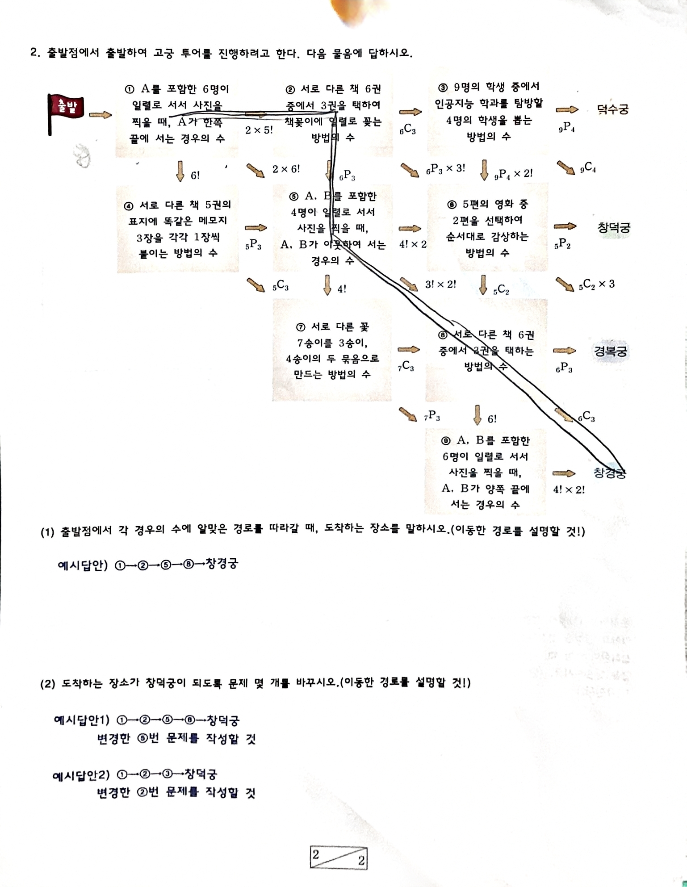

두 상한 $183.9$ vs $178.6$ 중 더 작은 쪽이 두 조건을 모두 만족 → $x\le 178.6$. $x\ge0$과 합치면:
0 ≤ x ≤ 178.6 (g)
왜 작은 쪽? "이하" 두 조건을 동시에 만족해야 하므로 교집합 = 더 빡빡한(작은) 상한.
❌ 흔한 실수 3가지
① /100 환산 누락 ② 큰 상한(183.9)을 답으로 ③ $(250-x)$ 부호 정리 실수
2 고궁 투어 — 경우의 수
각 박스의 경우의 수를 계산 → 그 값과 같은 화살표 라벨을 따라 이동 → 도착 고궁을 찾습니다.

▲ 원본 플로우차트 (화살표 연결은 이 그림을 기준으로 대조하세요)
🔢 9개 박스 경우의 수
각 박스를 눌러 정답 식·값을 확인하세요. 먼저 스스로 계산!
📍 도착 고궁
1행 끝 → 덕수궁 · 2행 끝 → 창덕궁 · 3행 끝 → 경복궁 · 최하단 → 창경궁
(1) 도착지 말하기
각 박스 값과 같은 화살표를 따라가면 도착하는 고궁을 경로와 함께 설명합니다.
✅ 예시 경로
①→②→⑤→⑧→창경궁
① $2\times5!$ 따라 ②로 → ② $_6\mathrm{P}_3$ 따라 ⑤로 → ⑤ $3!\times2!$ 따라 ⑧로 → ⑧ → 창경궁
⚠️ 주의
박스 값(식)은 확정이지만, 박스 사이 화살표 연결(특히 ⑤→⑧ 대각선)은 위 원본 그림으로 직접 대조하세요.
(2) 도착지를 창덕궁으로 바꾸기 창작·논술
경로 중 한 박스의 문제 자체를 변형해 그 경우의 수가 다른 화살표 라벨과 일치하도록 만들면 경로가 바뀝니다.
💡 예시답안
▸ ①→②→⑤→⑥→창덕궁 : ⑤번 문제를 변형해 작성
▸ ①→②→③→창덕궁 : ②번 문제를 변형해 작성
변형 전략
1. 목표 고궁(창덕궁)으로 가는 화살표 라벨 값을 먼저 확인
2. 그 값이 나오도록 박스의 인원수·선택수·조건(이웃/끝/묶음)을 조정
3. 변형한 문제 문장을 완성된 문장으로 다시 쓰기
4. "변형 후 경우의 수 = OOO 이므로 화살표 △를 따라 창덕궁 도착" 이라고 근거 서술
예: ⑤ 변형
"A,B 포함 4명 일렬, A,B 이웃" $(=3!\times2!=12)$ → "5편 중 2편 순서대로" 같은 값($_5\mathrm{P}_2=20$)에 맞춰 인원/조건 조정.
📐 연립일차부등식
기본 전략
① 미지수 1개로 통일 → ② 조건마다 부등식 → ③ 공통 범위(교집합) → ④ "이하/이상" 동시 만족은 더 빡빡한 쪽
단위 환산
$100\text{g당 } a \;\Rightarrow\; 1\text{g당 } \dfrac{a}{100}$
표가 "100g당"이면 반드시 ÷100 후 $x$(g)에 곱한다.
두 변수 합이 고정
$A+B=250 \;\Rightarrow\; B=250-x$
합이 일정하면 변수 1개로 줄여 부등식을 단순화.
🔢 순열 · 조합
순열 (순서 O)
$_n\mathrm{P}_r=\dfrac{n!}{(n-r)!}$
"일렬로", "순서대로", "줄 세우기" → 순서가 의미 있음
조합 (순서 X)
$_n\mathrm{C}_r=\dfrac{n!}{r!\,(n-r)!}$
"뽑기", "택하기", "고르기" → 순서 무관
한쪽 끝 고정
$2\times(n-1)!$
특정인이 한 끝(왼/오 2가지) → 나머지 $(n-1)!$ 배열
양쪽 끝 고정
$2!\times(n-2)!$
A,B가 양 끝(서로 자리 2!) → 가운데 $(n-2)!$
이웃하여 서기
(묶음 포함 전체)$!\times$(묶음 내부)$!$
이웃끼리 한 덩어리로 묶고, 덩어리 내부 순서 따로
같은 것을 일부에 붙이기
$_n\mathrm{C}_r$
"똑같은 메모 3장을 5권 중에" → 붙일 자리 선택이므로 조합
크기 다른 두 묶음 나누기
$_n\mathrm{C}_r$ (한 번만)
7송이→3·4 묶음: 3송이만 고르면 나머지는 자동 → $_7\mathrm{C}_3$. 같은 크기면 추가로 ÷2!
✏️ 자가 연습 9문제
🟢 쉬운 · 🟡 중간 · 🔴 응용. 풀이를 적은 뒤 "정답·풀이 보기"로 확인하세요.
📝 실전 논술 체크리스트
시험 당일, 답안 제출 전 스스로 체크.
🗂️ 자료 위치
정리 본문 · 학습 노트는 프로젝트 폴더에 있습니다.
02_text/예시문항.md — 전문 + 풀이 02_text/예상문제.md — 예상문제 4개 study.md — 약점 태그·개념 정리 PLAN.md — 전체 계획·일정
🧪 실전 예상문제
📌 사용법
실전은 예시문항과 형식이 같고 소재·숫자만 바뀝니다. 아래는 같은 사고 흐름을 연습하기 위한 예상문제입니다. 먼저 스스로 풀고 풀이를 펼쳐 확인하세요. (연립부등식 ×2, 경우의 수 ×2)
1 연립부등식 — 운동 보충제
운동선수 민수는 하루 에너지 2,800 kcal, 단백질 120 g이 필요하다. 세 끼 식사로 에너지 700 kcal, 단백질 30 g씩 섭취하고 부족분은 보충제로 채운다.
100g당
보충제 P
보충제 Q
열량
400 kcal
250 kcal
단백질
20 g
10 g
(1) 보충제로 채워야 할 에너지·단백질의 양은? (2) (1) 값 이하로 P, Q를 합쳐 200 g 섭취할 때 P의 범위는? (반올림 소수 첫째)
풀이 (1)▶
에너지 $2800-700\times3 = 700$ kcal, 단백질 $120-30\times3 = 30$ g.